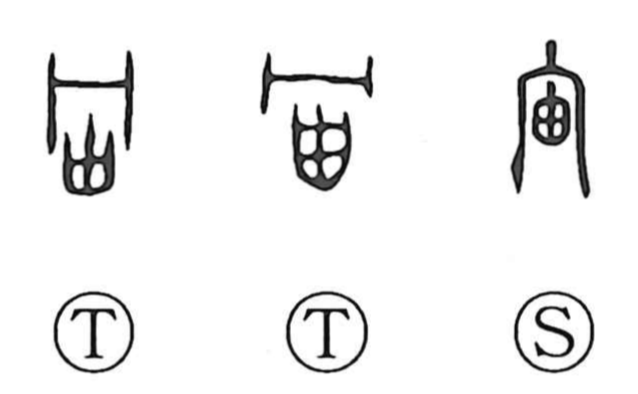

Explanation
宙 is a phono-semantic character with 由 as its phonetic. The graph 由 originally depicts a gourd whose seeds have ripened and dissolved, leaving a hollow interior—an image of emptiness and breadth that suits the idea of a vast expanse. The 宀 at the top is the roof of an ancestral mausoleum, a form shared with 宇, and it evokes the overarching vault. Early sources describe 宙 as the furthest reach where the limits of land and water spread out, an open, ultimate expanse. While the Huainanzi contrasts 宙 (time from antiquity to the present) with 宇 (space in the four quarters and above–below), the shared roof form shows that 宙 originally also named spaciousness. Hence its use for what is broad and boundless, as in 宇宙—“the endless space that surrounds us and all the heavenly bodies.”